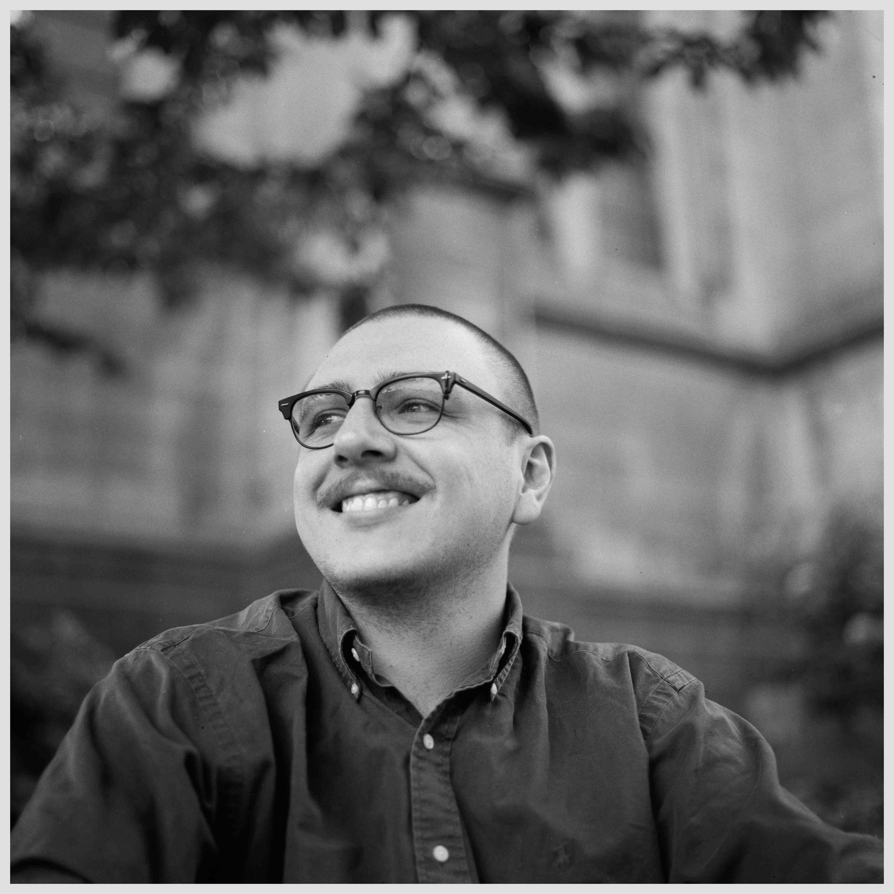

About me

I'm a chilean biochemist turned computational biologist currently pursuing my PhD at the Université de Lille, focusing on reconstructing the evolutionary tree of life through the lens of cellular metabolism leveraging novel computational paradigms for biological system representation.
My current research interest center around:
- Understanding how evolution shapes biological systems to guide discovery through open-endedness
- Computational & mathematical representations of biological systems
- Network biology and its relationship to biological complexity
Additionally, I'm interested on personal knowledge management (PKMs) and personal development environments (PDEs), where I invest some of my free time developing open-source software and tooling to tackle problems related to my note taking system and Neovim.
My complete CV can be found here.